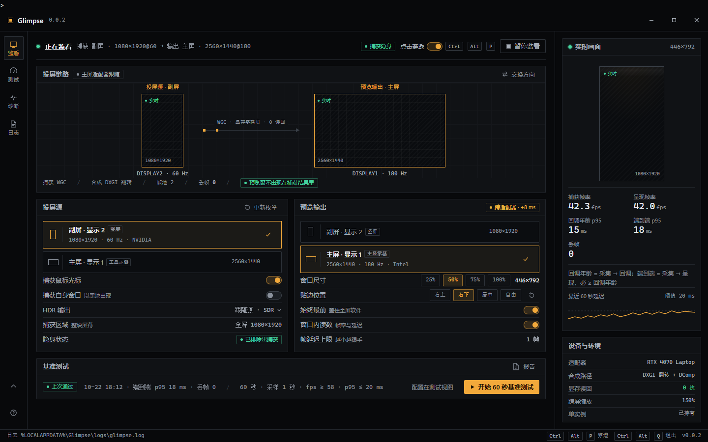
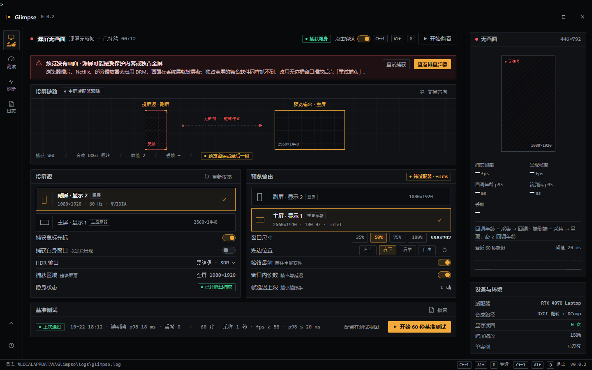
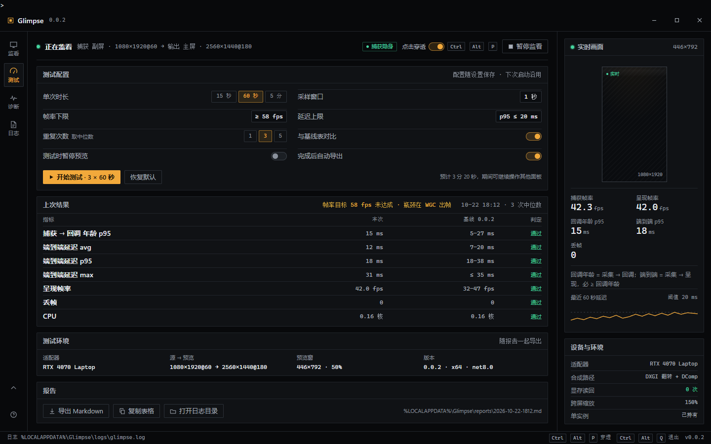
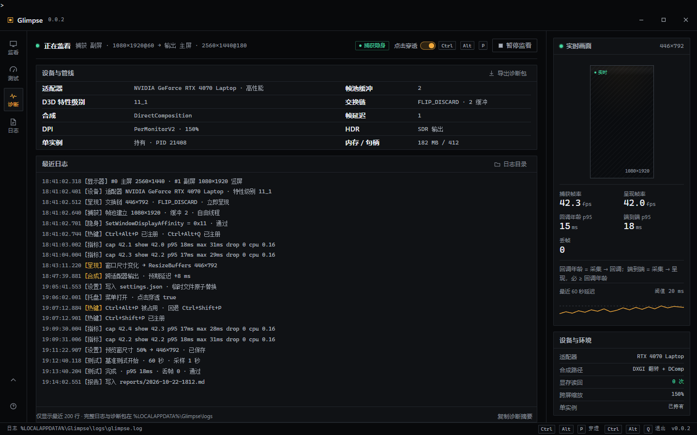
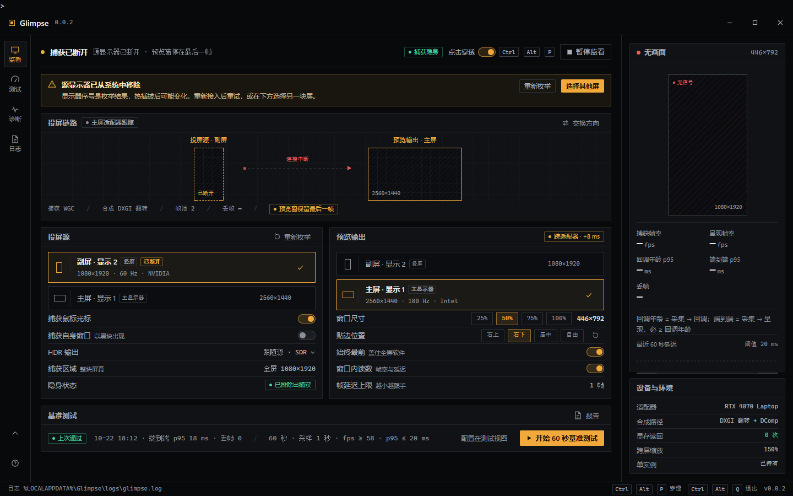
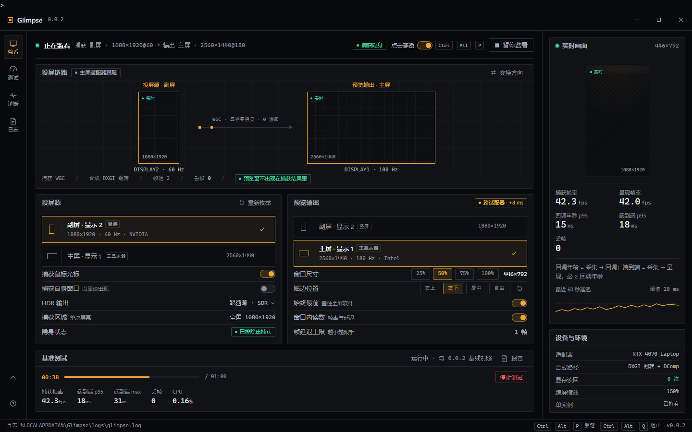
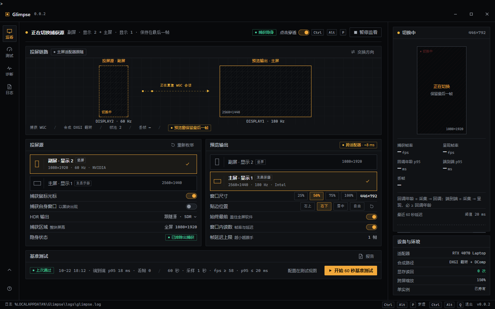
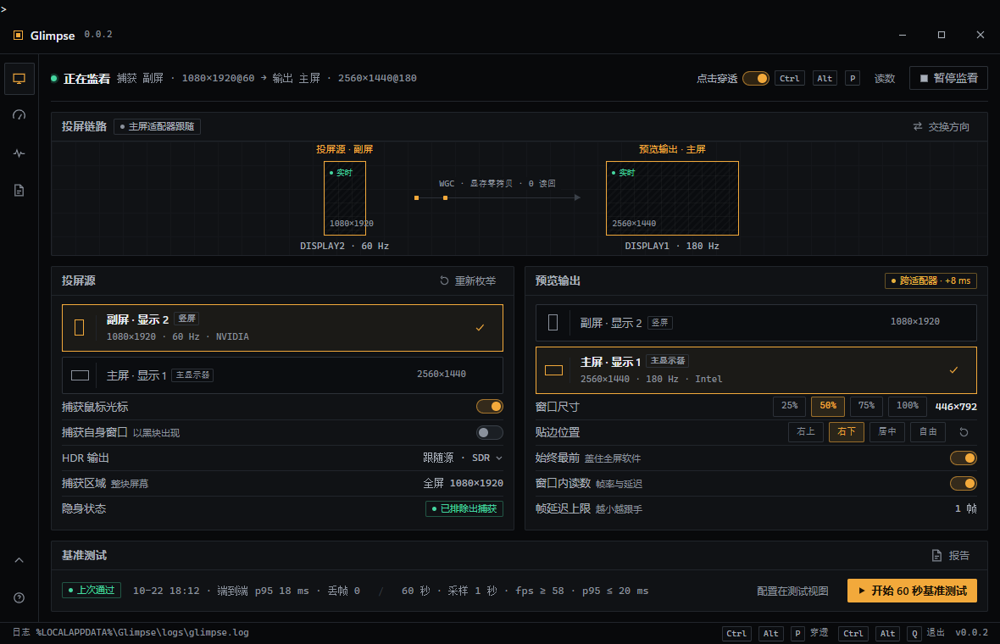

Glimpse 桌面客户端Stage Black · 暗场后台方向
0.0.2 · 设计稿
1440 × 900 · 96 DPI
2026-10-22
一句话方向
像灯控台一样，一眼确认「信号还活着」，其余全部退到黑里。
用户站在侧台、屏幕亮度低、只能分半只眼睛看它，所以这一屏不做功能罗列，
只回答三件事：画面通不通、延迟有没有超标、现在该不该动手。
为什么不走 Windows 原生设置那条路
系统风更安全，但纯黑的预览窗和浅色设置页放在一起会互相削弱；演出中切回面板，亮度跳变会晃眼。
为什么不像 OBS 那样做三栏
Glimpse 只有一个源、一个输出、一条链路。三栏是为多场景多源设计的，照搬会把「确认还活着」这件事稀释掉。
调性
能量 安静 — 观众在台上，界面不该抢注意力。强调色面积 ≤ 8%。
完成度 精致 — 用户会盯着数字怀疑它是不是坏了，1px 对齐、无模糊阴影。
密度 密 — 每天开几小时的专业工具，一屏看完状态，不折叠、不分页。
分量 重 — 黑底 + 等宽数字 + 硬边，像一块硬件面板。
严肃度 庄重 — 出错代价高：不用插画、不用弹跳动效、不用彩底胶囊。
动效 — 只有三处：帧点流动、状态切换 120–160ms、测试进度。全部只在状态变化处出现。
色彩
窗口底
#08090B
与预览窗同一档黑，切回面板不跳色
面板
#101215
分组块底，靠 1px 线不用阴影
主文字
#E8EBF0
13–14px，正文对比度 ≥ 12:1
强调 · 琥珀
#F2A93B
只在选中、主动作、当前读数
正常 · 绿
#45D6A0
状态灯与通过判定，不做装饰
警告 · 黄
#E8B23C
跨适配器、屏断开、未达标
错误 · 红
#EF5B5B
无画面、取消失败，永远配文字
八色里只有一种是「品牌色」。状态色不可当强调色用，强调色不可当状态色用；两种同时出现时，强调让位给状态。
字体
正文 · 13/400
预览窗的像素全部来自交换链，这里不能放任何 WinForms 控件。
辅助 · 11/400 #8A919C
副屏 #1 · 1080 × 1920 · 60 Hz · NVIDIA
正文用 Segoe UI Variable Text，中文回退 Microsoft YaHei UI；所有数字、路径、日志、键位用 Cascadia Mono，等宽保证逐帧比较时字不跳。
读数比正文大一号，因为它是演出现场唯一会被「扫一眼」的东西。
控件语法
捕获隐身
跨适配器
CtrlAltP
2px 圆角、1px 描边、无阴影、按下位移 1px。开关是「轨道 + 滑块」，开启时滑块变琥珀、轨道加深而非发光。
可选中的对象（显示器）用 1px 琥珀边 + 四角标记，不用彩色左竖条，因为四角标记和预览窗的角标是同一套语言。
界面

主控面板 · 监看拓扑 + 源/输出 + 基准测试

无画面（DRM / 独占全屏）横向压缩拓扑，把原因和恢复动作放前面

基准测试配置、结果对照基线表、导出

诊断设备与管线、日志尾、诊断包

源显示器断开不静默回退，先报清楚再让人选

基准测试运行中进度与实时指标同处一个块

切换捕获源保留最后一帧，不出现黑场

1180 × 760右栏收成抽屉，拓扑与卡片同步压缩
关键决定
- 所有操作都放在面板和托盘。 预览窗带 WS_EX_NOREDIRECTIONBITMAP，不能有控件、不能 GDI 绘制，所以它只能显示画面和一层独立子窗口的读数。
- 拓扑按真实宽高比画。 副屏是 1080×1920 竖屏，如果画成两个一样大的横矩形，用户看不出哪块是哪块。
- 选屏用屏幕卡，不用下拉框。 对象身份是「序号 + 比例 + 分辨率 + 主屏标记」，下拉框收起后这些信息全丢。
- 无画面时基准测试仍然可点。 它测的是管线而不是画面，黑屏时更能说明问题；但结果里会标注「无帧」。
- 断屏不静默回退。 显示器序号是枚举结果，热插拔后会变；自动换到另一块屏会让舞台直接黑屏。先报清楚，再让人选。
- 跨适配器是提示不是错误。 它是这台混合显卡机器上真实存在 +8ms，用黄色药丸标在预览输出标题栏，不弹窗。
- 托盘图标不带帧率。 每秒重绘的图标会吃 CPU，也违背「不打扰」；要看数字开窗口内读数。
- 收起态保留穿透开关。 演出中唯一可能需要临时改的就是这个，其余都收进面板。
- 面板自身不参与渲染循环。 所有读数按 1Hz 更新，窗口静止时不重绘，避免和渲染线程抢 GPU 时间片。
- 指标只有五项，名字与 StatsReporter 一一对应：cap / show / age p95 / present p95 / drop。回调年龄必 ≤ 端到端，两者同源同一次采集时间戳；不再出现第三个延迟。
- 关闭和最小化都只是收进托盘。 捕获与呈现不停，舞台画面不中断；只有托盘「退出」才结束进程，并且要二次确认。
- 持久化以 szDevice 为主键，Index 只做兜底。 卡片显示的是 Windows 显示设置里的编号（显示 1 / 显示 2），不是内部枚举序号。
- 基准测试只有一个入口。 监看页只负责开始和看上次摘要，全部配置都在测试视图，避免两处配置打架。